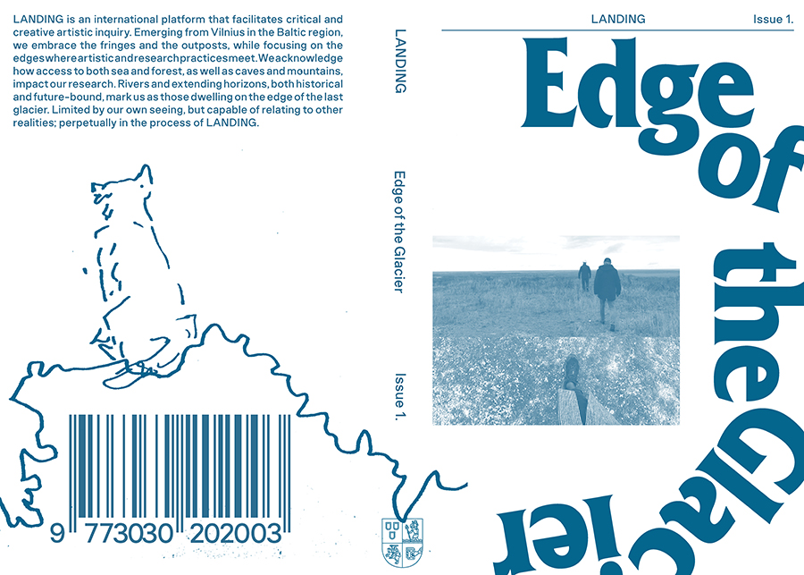

ISSN 3030-2021 eISSN 3030-203X
A glacier is shaped through the accumulation of ice, snow, rock, and sediment. As a being of its own, the glacier triggers our imagination. It’s the difference between inhuman forces and our human fragility that creates the desire to observe, engage, relate, and touch. Landing has evolved through encounters of practices and propositions. We convene around twenty-one submissions presented here. Our collaboration is shaped by close reading and reflections between the editorial team, our advisory board, the authors of Edge of the Glacier’s text/image submissions, and our community of peer reviewers.
‘Edge of the Glacier’ is organised into four resonances that propose a way of engaging with the material. Articulating material fragments or freeze frames from larger practices, each author or author group moves with their own scale(s), weight, and gravity.